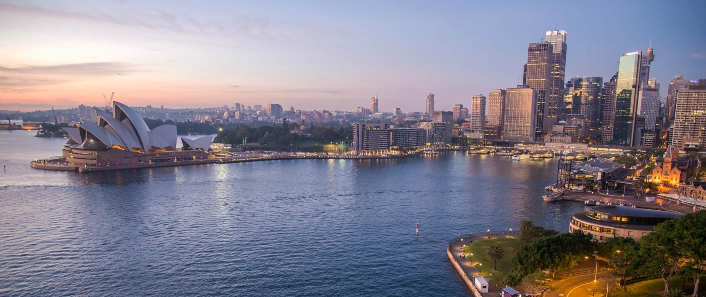

Sydney
Sydney is a cosmopolitan city surrounded by iconic beaches, world heritage sites, and acclaimed wine regions.
Besides being Australia’s largest city, Sydney is also its most visited.
Home » Travel Guides » Australia Travel Guide » Sydney Travel Guide
SYDNEY TRAVEL GUIDE
NOTICE: The information here is updated as best we can in light of COVID-19. Please check attractions, activities, etc before you go as things can change quickly.
sunset view of Sydney, Australia
Sydney is a cosmopolitan city surrounded by iconic beaches, world heritage sites, and acclaimed wine regions.
Besides being Australia’s largest city, Sydney is also its most visited. (And, contrary to popular belief,
not the country’s capital!).
Few people skip the city — and why would they?
With an incredible variety of attractions, beaches, restaurants, and sights to see, it’s easy to see why people
come here and stay a while! There’s so much to do here. Try to stay at least a week if you can. I never,
ever get tired of visit Sydney!
It’s amazing. Be sure to also spend some time on the lesser visited North Shore beaches.
This Sydney travel guide will help you make sense of all the things to see, show you where to stay, and help you save money.
When to Go to Sydney
September to the end of November and March to
May are the best months tovisit Sydney. These are the shoulder seasons, when temperatures are
pleasant and you don’t have to contend with the huge tourist crowds.
Airfare is also cheaper during this time.
September to the end of November is right before peak season,
so there will be some crowded places. But overall the temperatures are
between the low 50s°F (10°C) to the mid-70s°F (24°C). Fall season
(March-May) is much the same, so you’ll want to pack a light jacket
for those chillier days.

Top 5 Things to See and Do in Sydney
-
1. Hang out at the bitches
From Palm Beach and Manly to the famous Bondi and Coogee, Sydney has a beach for everyone.
All the beaches are easy to get to via public transportation and there are tons of restaurants around.
My favorite beaches are Manly (wide and beautiful) and Bronte (small and quiet).
2. See the blue mountains
Over the millennia, the sandstone here has been weathered
into gorges lined by steep cliffs and narrow ridges. See the magnificent rock formation the
Three Sisters or hike the many trails for excellent views of sheer rock walls, tumbling waterfalls,
and magnificent forests.
The park is free and you can get there by train from Sydney (90 minutes).
3. Visit wildlife sydney zoo
The Wild Life Sydney Zoo is set up with highly detailed,
“natural” environments for birds, wallabies, reptiles, and more. There are various guided tours
and animal feedings all day.
This is a good family activity. Admission costs is 36.80 AUD($28 USD).
4. See the sydney opera house
5. Walk the sydney harbour bridge
Other Things to See and Do in Sydney
1. Visit The Rocks
The Rocks is the oldest part of Sydney. With its narrow lanes, colonial buildings,
sandstone churches, and Australia’s oldest pubs, this neighborhood is where Sydney started when the British
first landed. It was almost torn down in the 1970s for modern high-rises, but, luckily, citizen action got it
preserved instead. The Rocks’ weekend markets, art museums, street entertainment, delicious (and sometimes overpriced)
restaurants, and beautiful views of the harbor, Opera House, and bridge make this is one of the coolest areas
of the city. I love heading up to the Sydney Observatory Hill Park
for a good view of the city, wandering the harbor promenade, and hitting the bars at night.
2. Botanic Gardens & Mrs. Macquarie Chair
You’ll find Australia’s first vegetable garden and a treasure
trove of trees, ferns, flowers, and gardens at the Royal Botanic Gardens. On a sunny day, you’ll find locals sprawled
out all over the lawns soaking up the sun. You can also see Mrs. Macquarie’s Chair, a seat carved into a stone cliff,
where you can sit and gaze out at the harbor.
There are also free one-hour volunteer-guided tours of the garden, too! Admission is free.
3. Ferry to Manly Beach
The ferry ride to Manly offers sweeping views of the harbor, Sydney Harbour Bridge,
and the world-famous Opera House. It’s a picturesque 30-minute ride each way that puts you in one of the coolest parts
of the north end of the city. Manly is famous for its wide beach,
giant waves, surfing, and kick-ass nightlife. Ferry tickets are 9.90 AUD ($7.50 USD).
4. Take the Town Hall tour
Built in 1889, Sydney’s beautiful Town Hall is a picturesque Victorian building.
They offer a detailed two-hour tour for only 10 AUD. It’s a great way to learn some extra history
about the building and its place in the greater tapestry of Sydney’s history. Tours only available on weekdays.
5. Go to the museums
Like most cities, Sydney has a wide variety of museums. And, luckily, thanks to Australia’s
Commonwealth past, all the public museums in the city are free, making it a great and inexpensive activity in an otherwise
expensive city. My favorite museum in Sydney is the Hyde Park Barracks. Set in the old convict barracks from the 18th
century, it does an amazing and detailed job of chronicling colonial life in Sydney, using the stories of the early
settlers, historical information, artifacts, and historical recreations. It’s well worth the 19.20 AUD entrance fee.
It’s always the highlight of my trip. Few people visit, making it one of the best non-touristy things to do in the city!
Other museums in Sydney worth visiting are the Art Gallery of New South Wales (modern art), the Museum
of Contemporary Art Australia at The Rocks (contemporary art), the Australian National Maritime Museum
(maritime history), the White Rabbit Gallery (contemporary Chinese art; also has a teahouse), the Hyde
Park Barracks Museum (local, criminal, and judicial history), and the Museum of Sydney (local history).
6. Learn to surf
Sydney is often the place travelers bite the bullet and learn the art of Australia’s
famous national pastime. There are many companies here that offer lessons. While Bondi is the most popular
beach, Manly on the north shore of Sydney has better waves (though you can find good waves up and down the
coast!). Surfboard rentals start at 12 AUD ($9 USD) per hour while two-hour group lessons cost around 75 AUD ($57 USD).
Umina Beach, Collaroy Beach, and Corrimal Beach are good beaches for beginners.
7. Visit the Hunter Valley
North of town is one of Australia’s premier wine regions. The Hunter Valley
is home to amazing wineries that produce luscious reds. While it’s not as easy on the budget, it is an excuse
to get out of the city and see the countryside. Day tours are offered from Sydney but they are expensive
(150-200 AUD/$115-152 USD) and you’ll spend a lot of time on a bus.
It’s best to stay for at least a night out in the valley to get the full experience.
8. The Tower Sky Walk
At 286m, the Sydney Tower Skywalk is as tall as the Eiffel Tower and twice as
high as the Harbour Bridge. It offers amazing panoramic views of the city from its Skywalk at the top.
I’m not a fan of heights but even I was impressed by the view! At 59.80 AUD ($45 USD),
it’s cheaper and easier than climbing the bridge itself (and the views are actually better).
Where To Stay in Sydney
Some of my favorite hostels in the world are in Sydney!
Here are a list of my favorite places to stay in the city:
Wake Up!
YHA Rocks
Base Sydney
Asylum Sydney Backpackers Hostel
Avoid the Jolly Swagman! It’s a horrible place to stay.
For more hostel suggestions be sure to check out my list of the top ten hostels in Sydney.
And, to find out exactly where in the city you should stay, here’s a post that breakdowns the best neighborhoods in Sydney.
Book things to do, attractions and tours with 10% discount